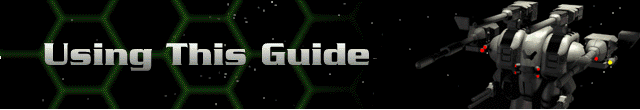

You have two views of the mission perimeter:
The mini-map hexagon in the top left corner of the screen is a top-down display of the entire perimeter with your forces displayed as white marks. Cybrid forces, when they are within line of sight, are displayed in yellow. You have broad control of the display in this window. Any movements you make here affect the main map view as well. Click once within the mini-map to jump to an area, or click and drag the white window frame to “sweep view” and cover the entire map quickly.
When you first land on any moon or planet, only the area within range of your fleet’s sensors is displayed. Anything out of range of the sensors appears black. It is a good idea to send your Hercs with the strongest sensors out first as scouts. Once an area has been scanned by your sensors, the terrain will permanently appear in the main view. However, if the terrain drops from your sensors range, it will appear in a gray ghosted format until your sensors pick it up again.
There are four directional keys around the mini-map which affect the main map. The upper two rotate the map clockwise and counterclockwise. This can often be used to see behind hills that obscure your vision. The lower two directional keys zoom in and out. The white window frame adjusts to the selected magnification.
You can change the attributes within the mini-map to show elevation, terrain colors, terrain type, sensor range, and ore locations. Do this by selecting Mini-Map from the Battle pull-down menu, or by pressing “M” on your keyboard.
Right click once on any hex on the map to display its terrain makeup, height (from a base level of 0), and movement cost. The movement cost is the number of energy units required to cross that hex for the specific Herc selected. Each Herc only has a limited amount of energy available for movement according to the Herc’s encumbrance with added weapons and devices, and according to the reactor and drive models.
|